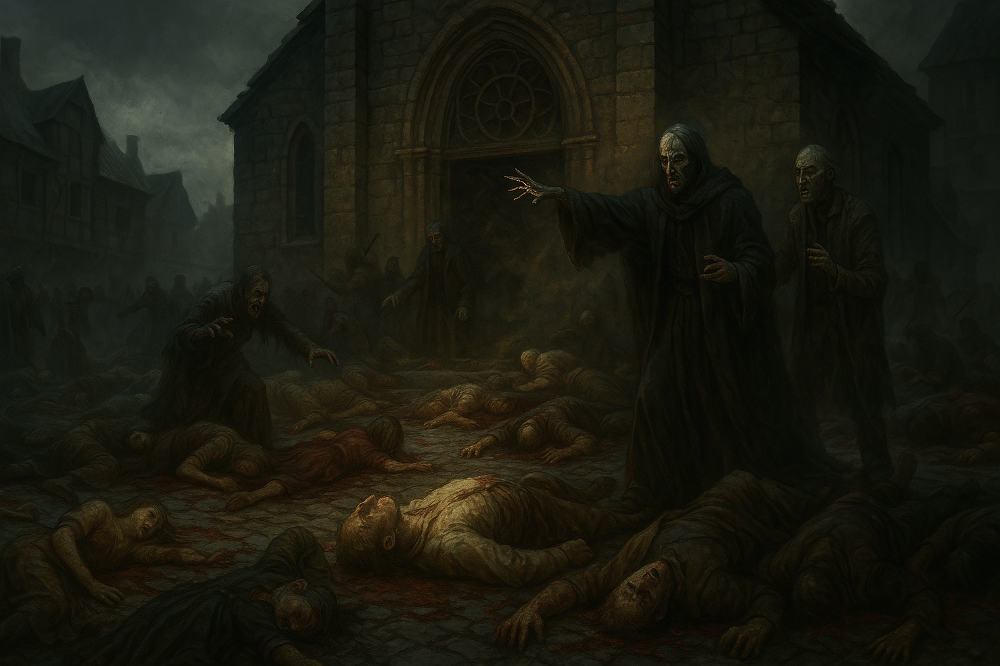

Chapter 7: Demons of Vowalon
Curse of Vowalon

Curse of Vowalon
15048.07.23
早晨六點的沃瓦倫，台北市議員們紛紛從前一晚不安的睡夢中甦醒。幾位冒險者起身，繞了繞他們這幾日逐漸熟悉的沃瓦倫。
早晨八點，眾人們集合在勞迪俱樂部享用早餐，大家都點了勞迪豪華早餐。準備離開俱樂部時，門被重重的甩開。Alfie 驚慌地衝了進來，口中念念有詞，對於九點將要舉行的儀式感到非常不安。冒險者們試圖詢問，卻問不出什麼有用的資訊。
經過 Bruce 的請託，台北市議員將 Alfie 護送至儀式會場。途中，Uko 慎重地向 Alfie 請教，Alfie 也在大家面前第一次冷靜而嚴肅的說話。他告訴冒險者們，他們已經踏入了一個無法回頭的命運，而他也相信，他再也見不到明天的太陽了。語畢，Alfie 獨自走向了儀式會場。
寂靜殿前的廣場，鎮民們早已聚集了起來，台北市議員花了好些功夫才擠出了空間。Midori 想了想，再次擠了出去，在沒有人發現的情況下，偷偷繞到了教堂正後方，試圖尋找關於之前發現的神秘縫隙的線索，卻沒有收穫。
儀式開始前，寇頓神父和台北市議員提起了作晚皈依拉索斯的 Tai Tai 我還要，今天一大早已經被他派遣出去執行任務了，所以不會出現在現場，請他們放心。儀式開始前，神父和 Grenland 兩人站在講台上，簡單給予了鎮民們一個關於「沃瓦倫的詛咒」近期事件的整理，並感謝台北市議員們成功將 Grenland 帶了回來，並稱呼他們為「沃瓦倫的英雄」。接著寇頓神父請鎮民們閉上雙眼，並附和著他的禱詞。
隨著祝禱的過程，Grenland 也在一旁作法。然而，當禱詞結束後，冒險者們突然發現周圍什麼聲音都沒有了，睜開雙眼，也一切都看不見。教堂後的 Midori，則試圖生火，想燒看看能不能把教堂後的縫隙燒開來。
在黑暗與寂靜中，冒險者們不敢妄動，卻接二連三地被攻擊。直到 Ron 踏出了黑暗與寂靜，才發現周圍滿是鎮民的屍體，而且有數位他們所熟悉的鎮民成為了殭屍，正無情地向他們攻擊，始作俑者，便是此時在他們前方的寇頓神父與 Grenland 大法師。冒險者們在攻擊殭屍的同時，Ron 與後來也踏了出來，以冰原狼之姿，衝向了 Grenland。隨著寇頓神父與 Grenland 的死去，黑暗與寂靜就此消逝，圍繞在他們身邊的，是化為殭屍的勞迪俱樂部的 Bruce 與 Benny、鎮長 Daryl、夜夢者的 Clementine，以及道金的店的 Graham。台北市議員們忍痛將這些他們所熟悉的善良的鎮民們真正的殺死，也在心中默念著，願他們安息，而鎮民們也在真正逝去的那一刻，向冒險者們在內心中道別。
沃瓦倫鎮唯一生還的，只剩下台北市議員了。虛弱的 Samael 從眼角看見一道黑影推開了寂靜殿的大門，告訴了夥伴們。此時化為獵狗的 Uko 扛起倒地的 Samael 以及 YHWH，與夥伴們一同衝進了寂靜殿，看見了已經被打開的神父辦公室。而那道他們曾試圖打開的掩藏在神父辦公桌後的門，已大大的敞開。小心翼翼的，冒險者們踏入了暗門，並點燃了火柴。裡面有一座木製電梯。通往神父辦公室的門重重關上，台北市議員無處可逃，只能選擇踏入電梯內。
電梯搖搖晃晃，逐漸下沉。遁入了一片黑暗，只有手上火把透出了微微的火光，照在冒險者的臉上。
「沃瓦倫的詛咒」已經成為過去式了，但是那些埋藏在「殿堂之下」的幽冥與黑暗，將會無止盡地吞噬一切。